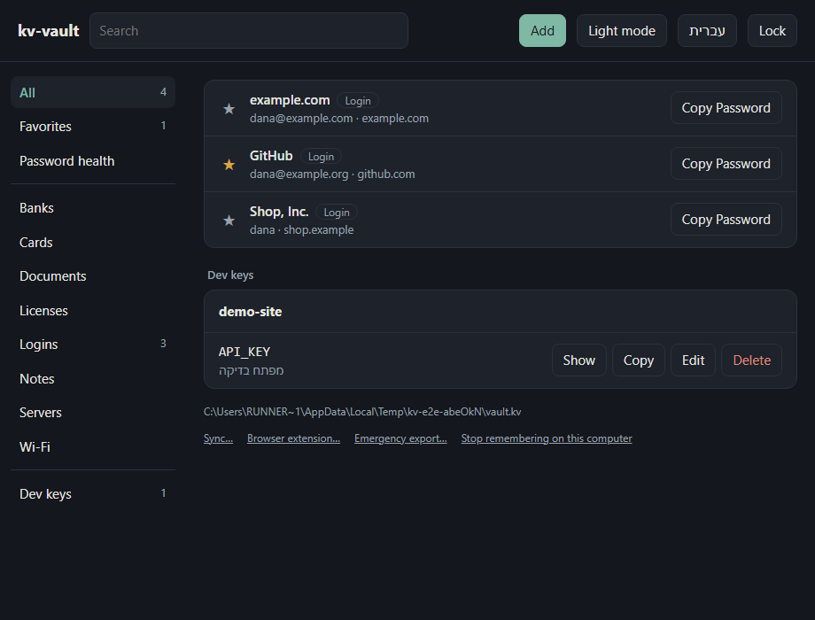
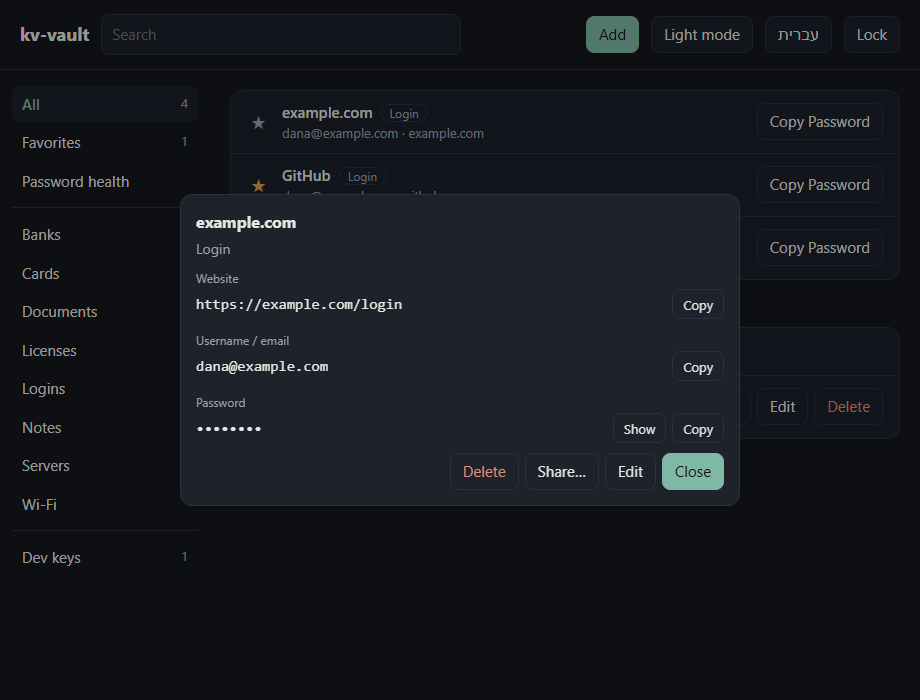
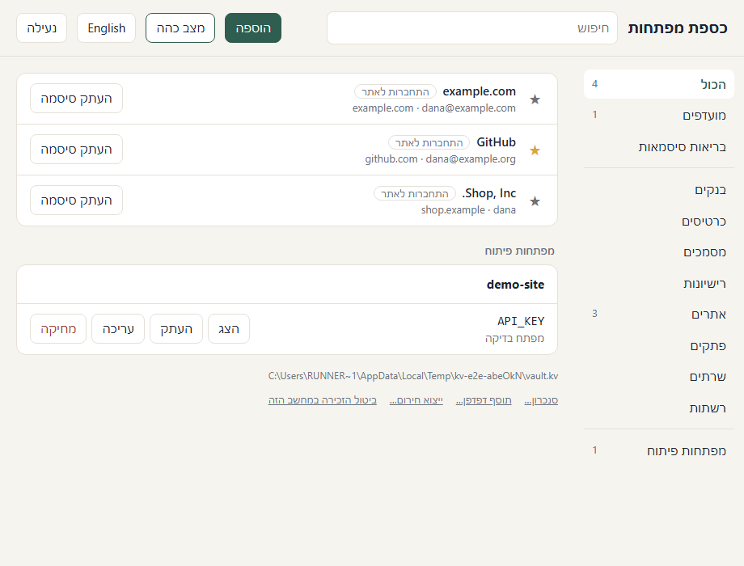

Fills sign-ins in your browser
An extension for Chrome, Edge and Firefox fills the login for the site you're on and offers to save new ones. It talks to this computer only — no port, no account — and only once you turn it on.
kv-vault is a free, open-source password manager. No account, no server of ours, no telemetry — the vault never leaves your machine unless you put it in your own cloud folder.
Windows 10/11 and Linux (AppImage, .deb). Free, MIT licensed.

An extension for Chrome, Edge and Firefox fills the login for the site you're on and offers to save new ones. It talks to this computer only — no port, no account — and only once you turn it on.
Chrome, Edge, Firefox and Safari exports, 1Password, Bitwarden, KeePass and LastPass. Duplicates are skipped, and the app offers to delete the plaintext export afterwards.
Reused, weak and year-old passwords, and logins without two-factor, in one view. An opt-in breach check sends only 5 characters of each password's hash.
Paste a site's two-factor key into a login and the current 6-digit code is one click away.
Pick a folder your cloud already syncs — Drive, Dropbox, OneDrive, iCloud. An encrypted copy lives there and changes merge item by item.
Seal an item to someone's sharing key into a .kvshare file. Only their vault can open it.
An emergency export under a recovery code you print. Forget the master password, and the code still opens your vault.
Typed items for what you keep besides logins — and in English or Hebrew, dark or light.


~/.keyvault/vault.kv. Copy it, back it up, sync it — it is useless without the password..env filesThe same vault has a kv command line (Node.js 22.6+, Windows, macOS, Linux). Run a project with its keys as environment variables, push them to Vercel or GitHub, and stop a commit that contains any of them.
npm install -g https://github.com/liormedan/kv-vault/releases/latest/download/kv-vault.tgz
kv set my-app/OPENAI_API_KEY # typed hidden, never on the command line
kv run my-app -- npm run dev # the app gets its keys; no .env on disk
kv guard install # a pre-commit hook that blocks leaked valuesgh attestation verify <file> --repo liormedan/kv-vault.